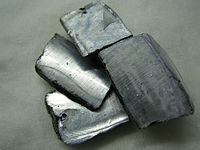

Numero atomico: 19
Massa atomica: 39,10
Temperatura di fusione (°C): 63
Temperatura di ebolizione (°C): 760
Energia di prima ionizzazione (kj/mol): 419
Elettronegatività (secondo Pauling): 0,82
Densità: 0,86
Numeri di ossidazione: +1
Configurazione elettronica: 1s2, 2s2, 2p6, 3s2, 3p6, 4s1
Maggiori Informazioni